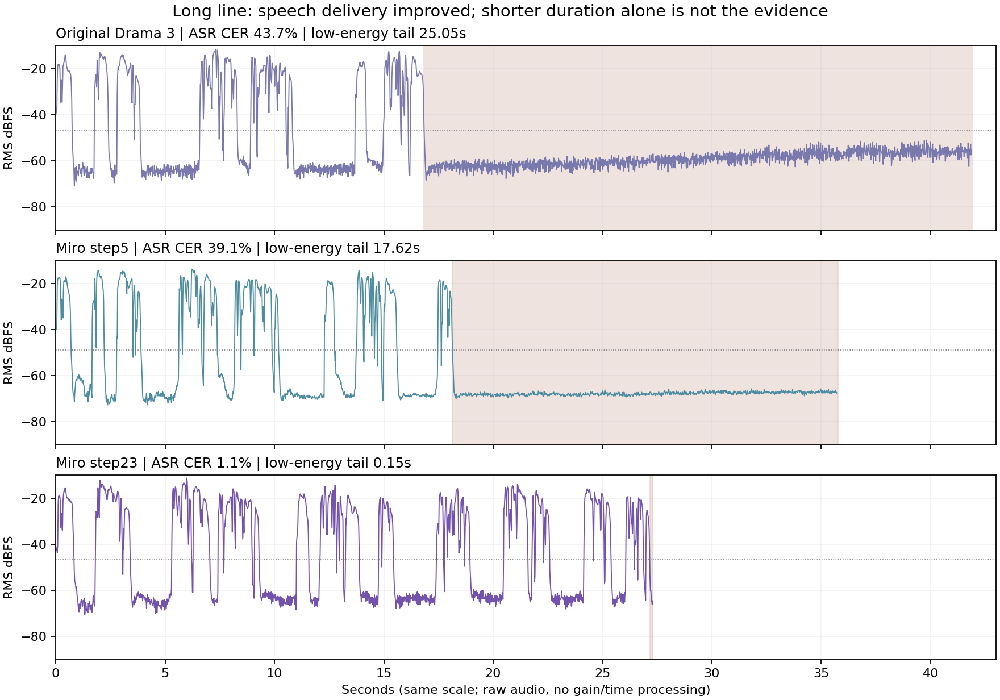

MIRO VOICE / 추가 비용 $0 / 로컬 분석
23회는 긴 대사 전달이 개선됐다.
공통 한국어 기반과 사람 같은 연기까지 검증된 것은 아니다.
세 모델 음성 비교로 돌아가기
사용자가 원한 최종 구조한국어의 발음·운율·연기를 공통 기반에 한 번 학습하고, 새 인물은 그 사람의 목소리만 적응시킨다. 이후 화자가 늘어도 공통 한국어 능력을 처음부터 다시 학습하지 않는다.
현재 실제 결과기존 Drama 3의 TTS 본체 전체 파라미터를 007번 한국어 녹음으로 적응시킨 단일 화자 실험이다. 다양한 화자에게 공유되는 한국어 기반의 개선은 아직 검증하지 않았다. 현재 23회 모델을 그 공통 기반의 완성본으로 부르면 안 된다.
1. 실제로 달라진 점
같은 대사·참조·지시·시드를 사용한 저장 음성 24개를 재분석했다. 새로운 생성이나 학습은 실행하지 않았다. Whisper small CPU 받아쓰기, 음향 특징, 화자 임베딩과 학습 코드를 확인했다. 사람의 블라인드 청취 평정은 수집하지 않았다.
ASR 오류율은 인식기 지표이고 발음 오류의 정답이 아니다. 저에너지 구간은 각 파일 최대 20ms RMS보다35dB 아래 또는−60dBFS 이하라는 음향 기준이며, 무조건 완전한 무음은 아니다. 화자 유사도는 실패한 안도 한 조건을 제외한7개씩의 코사인 값이며 정확도·자연스러움 점수가 아니다.
긴 대사에서 확인한 개선: 기존은 약16.7초까지, 5회는 약18.1초까지 문장이 인식된 뒤 뒷부분이 누락되고 낮은 에너지만 남았다. 23회는 끝의 “나는 어디 안 가고, 여기서 기다릴게”까지 인식됐고 뒷부분에 발화 에너지가 유지됐다. 짧아진 총 길이는 단순한 말속도 상승보다 대사 중단·저에너지 꼬리 감소와 관련된다.

단 하나의 사전 지정 긴 대사·시드에 대한 결과다. 새 문장 전체에 일반화됐다고 판단하지 않는다.
목소리 복제: 단일 중립 참조 기준으로 23회 유사도는 조금 올랐지만, 다른 007번 실제 감정 녹음을 포함한 묶음 기준에서는 기존을 일관되게 넘지 않았다. 23회가 목소리 자체도 더 정확히 복제한다고 확정할 수 없다.
2. 아직 막혀 있는 연기 제어
위로와 억눌린 분노의 분리가 약하다. 23회에서 같은 시드로 두 지시를 바꾼 길이 차이는0.093초/0.046초, 중앙 음높이 차이는3.1Hz/0.9Hz였다. 지시는 고정하고 시드만 바꾼 길이 차이는 평균0.302초, 음높이 차이는14.7Hz였다. 두 시드·한 문장의 일부 특징만 본 결과지만, 맥락에 맞는 연기가 강화됐다는 근거는 약하다. 다른 강세·음색 표현이 있을 가능성은 별도 청취로 확인해야 한다.
조용한 목소리와 무성 속삭임은 다르다. 23회 속삭임은 기존보다 전체 RMS가7.4dB 낮아졌다. 그러나 음향 활동 구간의 유성음 추정 비율은 약72%로 남았다(기존80%,5회82%). pYIN 자체도 속삭임에서 오류가 있으므로, 이 수치로 숨결·ASMR 연기의 성공 여부를 판정하지 않는다. 현재 자료에는 검증된 속삭임 지도 경로가 없다.
반복되는 대사 중단: 안도·시드1234에서는 세 모델 모두 받아쓰기가 “괜찮아”에서 끝났다. 약0.8초 발화 뒤11초가량 저에너지가 이어져 토큰 한도에 도달했다. 한도를 늘리는 것만으로 해결될 근거는 없다. 무음성 토큰 진행·내용 누락·EOS 종료를 함께 진단해야 하며 정확한 내부 원인은 이번 WAV만으로 확정하지 않았다.
3. 지금까지 무엇을 학습했나
- 데이터는007번 한 화자600개, 약43.7분이다. 무감정250·기쁨150·분노100·슬픔100개이며 모두 대화체로 라벨돼 있다. “모두 무감정 낭독”이라는 과거 설명은 맞지 않는다.
- 학습531개·검증59개·참조4개·시험6개로 나뉘었다. 23회는 옵티마이저 업데이트23번이다. 배치당16개로 총368개, 약26.5분 분량을 한 번씩 보여준 약0.69바퀴다.
- TTS 본체35,899,643,008개 파라미터는 학습 대상이었다. LoRA나 축소 모델은 아니다. 다만 파라미터를 모두 열었다는 사실과 한국어 기반이 충분히 학습됐다는 결론은 별개다.
- 한국어 HuBERT는 고정된 보조 교사다. TTS의 내부 표현을 한국어 음성 표현에 가깝게 맞추는 손실을 추가했다. HuBERT 자체와 기존 음성 코덱을 재학습한 것은 아니다.
- 학습은 한국어 대본→기존 코덱의 음성 토큰, 007번 목소리와 감정 태그의 대응을 학습한다. 다양한 목소리에 공통으로 전이되는 한국어 능력의 구축·검증은 수행하지 않았다.
한국어 교사 손실은 최근 구간에서 감소했지만, 함께 학습되는 작은 투영층의 적응도 포함된다. 서로 다른 배치의 학습 손실이며 독립 검증·발음·사람 같은 연기 점수가 아니다. 현재 로그의 음성 예측 손실도 단조롭게 감소하지 않는다.
4. 코드로 확인한 구조상 병목
- 현재 학습 입력이 너무 단순하다. 실제 입력은 대본과
[happy]·[sad]·[angry] 같은 전역 태그다. 원본600개 중530개에 있는 구절 경계표시, 감정 강도와 구절별 실제 쉼·속도·강세는 이 학습 경로에 들어가지 않는다. 강도 라벨 자체도 감정 범주와 엮여 있어 독립적인 강약 제어 정답으로 단정하면 안 된다. - 이번 비교는 실제 대화 맥락 입력 실험이 아니다. 생성기는
tagged_text와 참조만 받는다. 비교 자료의 scene·이전 대화는 모델에 직접 전달되지 않고 설명용 메타데이터로 남는다. 사람이 미리 정한 연기 지시에 반응하는 실험이며, 장면을 읽고 연기를 결정하는 전체 경로를 검증하지 않았다. - 원하는 표현과 학습 예제가 맞지 않는다. 현재600개에는 같은 문장을 다른 감정으로 녹음한 짝이 없다. 화자·감정·대본을 분리해 배우는 근거가 약하고, 억눌린 분노/가까운 무성 속삭임/숨·웃음 같은 표현의 검증된 세부 라벨도 없다.
- 학습 목표는 음성 예측과 교사 표현 정렬이다. 한국어 교사는 연기 감독이나 사람의 선호 평가자가 아니다. 구절별 감정·속도·에너지·쉼의 별도 목표 또는 사람의 연기 선호로 정렬하는 과정은 현재 코드에 없다. 감정 태그 SFT도 가능하지만 해당 태그와 실제 표현의 충분한 대응 예제가 필요하다.
- 코덱 병목은 아직 별개다. 세 모델의 코덱은 동일하게 고정돼 있다. 한국어 HuBERT 추가는 코덱의 기존 시멘틱 교사를 교체한 작업이 아니다. 코덱의 한국어·속삭임 표현 한계가 해결됐다고 말할 수 없고, 이번 비교만으로 코덱이 주원인이라고 단정할 수도 없다.
보관된 학습 소스 해시와 현재 data.py/core.py/korean_teacher.py/prepare_007.py/matched_fullsize.py가 일치하는 것도 확인했다.
5. 원래 목표에 맞는 다음 구조
공통 Miro-KO 기반
다양한 한국어 화자·대사·감정·구절 운율로 TTS 본체 Full FT
한국어 교사는 보조 감독
→새 목소리 등록
기반을 재학습하지 않고 먼저 참조 클로닝
부족한 화자는 음색·고유 말투 적응
한 모델에 여러 목소리를 유지하려면 화자별 참조/ID를 조건으로 사용하고 화자를 균형 있게 학습한다. 새 화자로 가중치를 추가 학습할 때는 기존 한국어·화자 예제를 함께 유지해 공통 능력 망각을 확인해야 한다. 기반 Full FT와 새 화자 등록 비용을 분리해서 관리해야 한다.
핵심 합격 기준은 학습하지 않은 화자에서의 전이: 화자를 통째로 제외한 검증군에서 기존 Drama 3와 Miro-KO 기반에 동일한 소량 참조를 주고, 새 한국어 대사의 발음·끝까지 전달·화자 유지·맥락별 연기를 비교한다. 007번만 좋아지는 것으로 공통 기반의 성공을 판정하지 않는다.
현재007번으로 할 수 있는 일은 학습·저장·내보내기 경로 검증, 기존 강도/구절표시와 실제 음향의 관계 분석, 단일 화자 연기 조건 실험이다. 여러 화자에 일반화되는 기반의 증거를 대신할 수는 없다. 검증된 속삭임 원음이 없으면 ASMR 지도 데이터의 빈칸도 남는다.
이번 턴에서는 이 추가 학습·생성·서빙 변경을 실행하지 않았다. 기존23회 원본과 비교 음성을 보존하며 추가 지출은0달러다.
받아쓰기 원문 · 긴 대사
기존 Drama 3
괜찮아. 지금은 아무 말 안 해도 돼. 네가 무슨 일을 겪었는지 내가 다 안다고 말하진 않을게. 다만 혼자 견디게 두고 싶지는 않아.
Miro 5회
괜찮아, 지금은 아무 말 안 해도 돼 네가 무슨 일을 겪었는지 내가 다 안다고 말하진 않을게 다만 혼자 견디게 두고 싶지는 않아 여기 앉아
Miro 23회
괜찮아. 지금은 아무 말 안 해도 돼. 네가 무슨 일을 겪었는지 내가 다 안다고 말하진 않을게. 다만 혼자 견디게 두고 싶지는 않아. 여기 앉아. 순부터 천천히 고르자. 네가 준비되면 그때 말해줘. 나는 어디 안 가고, 여기서 기다릴게.
측정 방법·원시 결과·근거
모든24개 결과와 같은 참조의 해시를 기존 보고서와 재대조했다. 로컬 Whisper small CPU는 한국어·temperature0·beam5이며 정답 대본을 프롬프트로 주지 않았다. 받아쓰기에 맞춘 음성 수정은 없다. 화자 임베딩 특징 추출에만16kHz·VAD·음량 정규화를 적용하고 비교용 WAV는 바꾸지 않았다. 실측 피치·유성음·강약은 휴리스틱이며 연기 선호의 정답이 아니다.
샘플은 감정별2시드·긴 대사와 속삭임 각각1개에 불과하다. 한국어 교사 없는 동일조건 Full FT 대조군도 없다. 교사만의 효과, 다른 화자 전이, 일반적인 자연스러움 우위는 검증되지 않았다.
공식 자료 대조: 한국어 HuBERT 모델 카드는 한국어 음성의 자기지도 표현 학습을 설명한다. Drama 3 논문 §2.1은 S2 코덱 유지를 설명하며, 서론에서는 속삭임·웃음·쉼 때문에 ASR와 화자 유사도만으로 연기 선호를 측정하기 어렵다고 설명한다. 이 문헌은 이번007번 실험의 성공을 증명하는 자료로 사용하지 않았다.
추가 학습0회 · 신규 음성 생성0개 · 클라우드 실행/유료 API0회 · 비용$0
기존 원본 학습 체크포인트와 음성 파일을 수정·삭제하지 않았다.